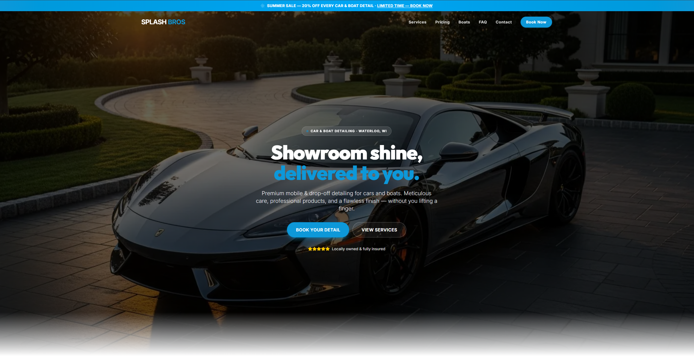
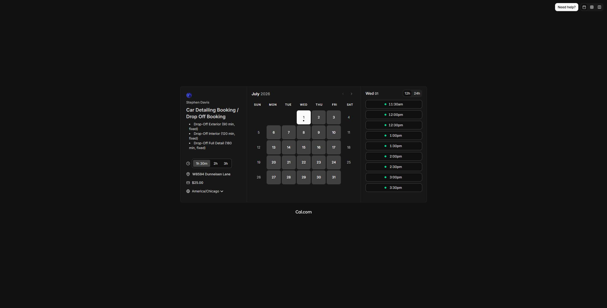
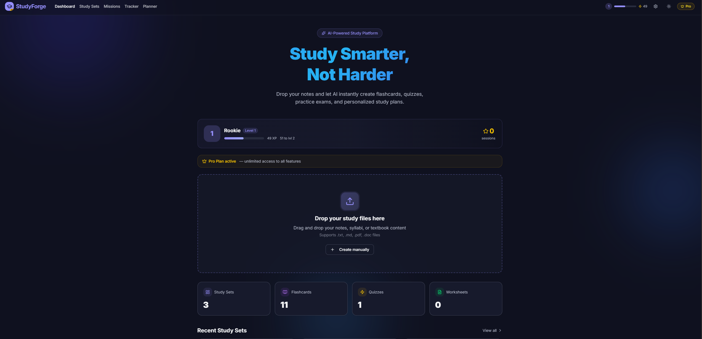
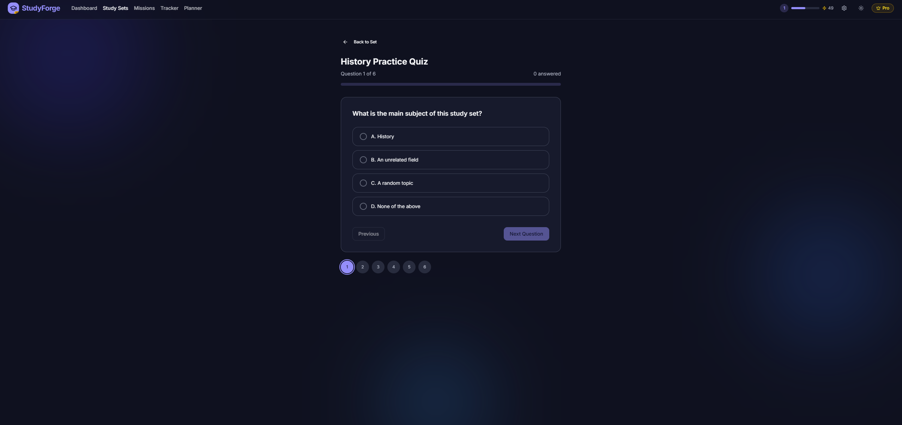
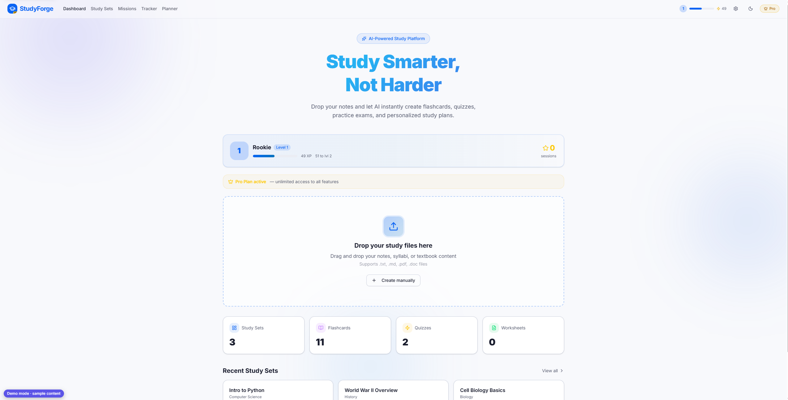

UX designer and small-business owner. I redesigned my own detailing business's booking flow and cut an estimated 5 missed bookings a day down to zero.
I run Splash Bros Detailing, a mobile and drop-off detailing business in Waterloo, WI. I also work a separate day job, so when the business's booking process broke down, I had to fix it myself — no team, no budget for a developer.
That constraint became my first real UX project: diagnose the problem, research how others solved it, build something, get feedback from actual customers, and redesign around what they told me. I'm now formalizing that instinct with the Google UX Design Certificate, Google AI Essentials, and hands-on practice in Figma.
Every booking ran through a phone call or text message. I work a day job, so I couldn't always answer — by my own count, that cost the business at least 5 missed calls a day. Each missed call wasn't just a missed message, it was a lost booking.
I researched how other detailing and local-service businesses handled booking online, and studied scheduling tools to see what a self-serve flow could look like. At the same time, I started teaching myself to build automated assistants that could field routine questions, so once a job was booked I could go straight to the work instead of the inbox — something I'm still developing, not yet live on the site.
My first version of the site was honestly more of a showcase — photos of finished cars, a portfolio of my work — than a tool built to convert visitors into bookings. Customers told me directly: make it more user-friendly, easier to navigate, and get straight to the point so they can book and be done.
I rebuilt around that feedback. Cut the showcase down, put a booking calendar and a $25 deposit front and center, and shortened the path from landing on the page to confirming an appointment.


Studying is usually boring, and boring doesn't stick. I noticed that the times I retained the most weren't sitting at a desk grinding — they were moments like driving to work and thinking through a class topic almost like I was listening to a podcast about it. I wanted to build that feeling on purpose: make learning entertaining enough that people actually want to engage with it, because engagement is what turns into better grades, not just more study time.
I designed and built the entire platform myself, end to end — frontend, backend, database, AI integration, and payments. No team, no co-founder. I own every decision in the product, for better and worse.
I'm currently testing the product directly with students and with college staff who can help get it in front of more students. I'm using their feedback to figure out what actually makes someone keep using a study tool versus abandoning it after one session.
Separately, I audited the product for accessibility and found real problems — broken light/dark mode theming, low contrast text, and missing keyboard navigation on custom UI components. I used AI tooling to help diagnose and fix those issues as part of an ongoing redesign.


